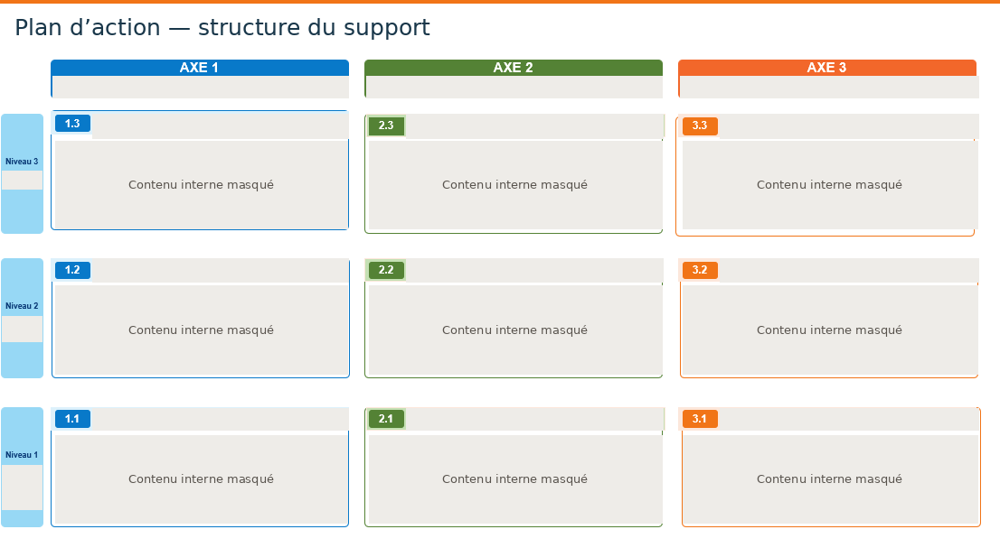

Interroger les conditions d’engagement
Mettre en relation les perspectives d’évolution, la mobilité interne et l’engagement des collaborateurs, en tenant compte du rôle des acteurs qui accompagnent les parcours.
RESSOURCES HUMAINES · PROJETS ET TRANSFORMATION
Diagnostic d’appropriation des dispositifs de parcours professionnels dans le cadre de la Nouvelle Convention Collective Nationale de la Métallurgie.

Présentation publique de ma démarche et de mes compétences. Les données individuelles et modalités propres à l’entreprise ne sont pas reproduites. Un extrait de livrable est présenté avec ses contenus internes masqués.
MON APPORT EN CHIFFRES · DIAGNOSTIC RH
Valeur ajoutée : passer de signaux RH hétérogènes à un diagnostic structuré, étayé et directement exploitable pour orienter les décisions et prioriser les actions.
DIAGNOSTIC D’APPROPRIATION
Étudier la manière dont les dispositifs de parcours professionnels et de classification sont compris et mobilisés, pour construire des recommandations d’accompagnement.
Cette mission porte sur l’appropriation des dispositifs existants et les conditions de leur mise en œuvre. Elle ne consiste pas à réaliser une nouvelle évaluation de leur conception.
Mon travail articule analyse documentaire, exploitation de données RH, entretiens et synthèse des contributions. Il vise à fournir des éléments structurés pour éclairer la réflexion du management.
RECHERCHE UNIVERSITAIRE ET PRATIQUE RH
Dans le cadre de mon master en sociologie, j’ai consacré mon mémoire de 2024 aux liens entre l’engagement des collaborateurs, la mobilité interne et les parcours professionnels. Ce travail interrogeait la place des parcours comme levier d’engagement et le rôle des acteurs RH dans leur mise en œuvre.
Le diagnostic d’appropriation conduit en 2026 aborde un autre versant de cette réflexion : comprendre comment les dispositifs sont perçus, compris et mobilisés sur le terrain. Ces deux travaux portent une attention commune aux conditions qui permettent aux collaborateurs de se projeter dans leur évolution professionnelle.
Mettre en relation les perspectives d’évolution, la mobilité interne et l’engagement des collaborateurs, en tenant compte du rôle des acteurs qui accompagnent les parcours.
Examiner la lisibilité des dispositifs, leur compréhension et l’accompagnement de leur utilisation pour construire des recommandations adaptées aux besoins du terrain.
Un fil conducteur entre recherche et pratique : comprendre ce qui permet de rendre les parcours professionnels accessibles et mobilisables, puis traduire cette réflexion en propositions d’accompagnement.
Le mémoire universitaire de 2024 et le diagnostic professionnel de 2026 sont deux travaux distincts, avec leurs objectifs et leurs sources propres.
UNE DÉMARCHE DE CONSEIL INTERNE
Comprendre les objectifs des dispositifs, préciser la problématique et organiser les informations nécessaires à l’étude de leur appropriation.
Analyser les enquêtes collaborateurs, les retours d’expérience et les données disponibles en tenant compte de leur date, de leur périmètre et de leur finalité.
Mettre en perspective la parole des salariés, les observations des managers, les retours des équipes RH et les contributions des partenaires sociaux.
Organiser les retours qualitatifs par thèmes, rechercher les convergences et examiner les différences de perception. Aucun constat ne repose sur une source unique.
Hiérarchiser les enseignements et préparer une présentation synthétique destinée au management, en reliant les analyses aux questions à traiter.
Traduire les enseignements en pistes de réflexion, recommandations et propositions d’action. Distinguer les propositions des actions effectivement déployées.
Proposer des indicateurs et des modalités de gouvernance pour accompagner la mise en œuvre et permettre des ajustements dans la durée.
QUALITÉ DE L’ANALYSE
Confronter les informations issues de plusieurs populations et modes de recueil. Rechercher des convergences avant de formuler une conclusion.
Exploiter un corpus de verbatims pour comprendre les perceptions et les usages, sans isoler les propos de leur contexte.
Tenir compte des différences entre questionnaires, populations et périodes. Interpréter les tendances à la mesure de ce que les sources permettent réellement d’établir.
Distinguer observations, interprétations et propositions. Construire un raisonnement lisible et relié aux informations analysées.
Les noms des enquêtes, leurs résultats, les compositions détaillées des panels et les propos recueillis ne sont pas publiés.
DE L’ANALYSE À L’AIDE À LA DÉCISION
Consolider la méthode, organiser les enseignements et formuler les pistes de réflexion. Le rapport interne n’est pas disponible en téléchargement.
Adapter la présentation aux instances de management : exposer la démarche, rendre les informations compréhensibles et préparer la discussion.
Organiser les propositions, réfléchir à leur priorisation et prévoir les conditions de leur suivi. Les arbitrages et la feuille de route interne ne sont pas reproduits.
Concevoir une représentation d’ensemble pour faciliter la compréhension des liens entre objectifs, actions et pilotage.
Contribuer à la conception d’un cadre de gouvernance et d’indicateurs pour suivre la démarche dans le temps.
Préparer des supports de priorisation, de suivi des actions et d’identification des points de vigilance, ainsi que des supports de communication.
UNE MÉTHODE RENDUE VISIBLE
ILLUSTRATION GÉNÉRIQUE RECONSTITUÉE
Cette illustration présente une méthode de travail. Elle ne reprend aucun constat, résultat ou choix stratégique interne.
LES COMPÉTENCES MOBILISÉES
Structurer une problématique, analyser les usages et intégrer les points de vue des parties prenantes.
Croiser des données quantitatives et qualitatives, apprécier leurs limites et construire une synthèse argumentée.
Transformer une analyse complexe en supports compréhensibles et en propositions utiles à la décision.
Organiser les livrables, adapter les messages et préparer les modalités d’accompagnement et de suivi.
Cette expérience illustre ma capacité à conduire une analyse rigoureuse, à rapprocher des points de vue multiples et à préparer des propositions concrètes sans perdre de vue les conditions de leur appropriation.
EXTRAIT DE LIVRABLE ANONYMISÉ
